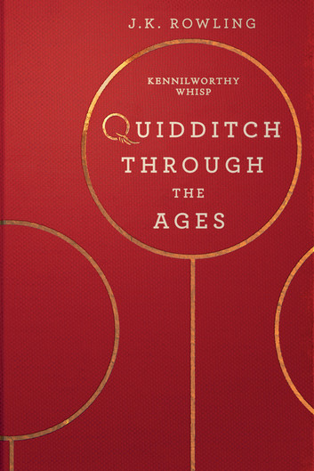

Zoals bij elke sport, zijn er ook bij Zwerkbal regels nodig. In het jaar 1750 werden door het Britse ministerie van Toverkunst de officiële regels van het spel opgeschreven, deze moesten dan ook overal nageleefd worden.
- Spelers mogen niet over de grenslijnen van het veld lopen, hoewel ze zo hoog als gewenst kunnen vliegen. De Slurk moet worden overgegeven aan de oppositie als een speler de grens verlaat (het is onbekend wat de straf is als een verdedigende speler het veld verlaat).
- "Time-out" kan op elk moment worden aangeroepen door de kapitein van een team. De time-out kan worden verlengd tot twee uur als een game al langer dan twaalf uur heeft geduurd. Als u na deze tijd niet terugkeert naar het veld, wordt het team gediskwalificeerd.
- Spelers mogen niet over de grenslijnen van het veld lopen, hoewel ze zo hoog als gewenst kunnen vliegen. De Slurk moet worden overgegeven aan de oppositie als een speler de grens verlaat (het is onbekend wat de straf is als een verdedigende speler het veld verlaat).
- "Time-out" kan op elk moment worden aangevraagd door de kapitein van een team. De time-out kan worden verlengd tot twee uur als een game al langer dan twaalf uur heeft geduurd. Als u na deze tijd niet terugkeert naar het veld, wordt het team gediskwalificeerd.
- Sancties kunnen worden toegekend aan teams door de scheidsrechter. Een enkele chaser kan de penalty nemen door vanuit de centrale cirkel naar het scoregebied te vliegen. De Keeper van het andere team kan proberen het schot te stoppen, maar alle andere spelers mogen niet tussenbeide komen (het is onbekend of de Seeker nog steeds kan proberen de Snitch te vangen terwijl een penalty wordt geprobeerd).
- Contact is toegestaan, maar een speler mag de bezemsteel van een andere speler of een deel van zijn anatomie niet vasthouden.
- Geen vervanging van spelers is toegestaan gedurende het spel, zelfs als een speler te geblesseerd of moe is om te blijven spelen. (Opmerking: volgens Goblet of Fire duurde het tijdens de Zwerkbal Wereldbeker op een gegeven moment dagen en moesten de spelers worden uitgeschakeld zodat ze wat konden slapen).
- Spelers mogen hun toverstokken op het veld nemen, maar mogen niet op of tegen spelers, bezems van bezems, scheidsrechter, een van de vier ballen of toeschouwers worden gebruikt.
- Een spel van Zwerkbal eindigt pas als de Gouden Snaai is gepakt, of met wederzijdse toestemming van beide teamkapiteins.
- Alleen de Keeper kan de quaffle-shots blokkeren die door het andere team zijn gegooid.

Mochten de bovenstaande regels gebroken worden, dan spreekt men van een overtreding en zal een gepaste sanctie volgen.
Een wijziging van de regels van Zwerkbal in 1849 bepaalde dat als een lid van de menigte een speler betoverde, hun team automatisch de wedstrijd zou verliezen, ongeacht of het team de magie had uitgevoerd of goedgekeurd.